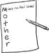

Something You Can Do
Do you like word activities? Here is a fun and challenging word activity that makes you think! You might want to put it on a card to show someone that you care about them. Or do it when you want to study a certain topic, like “love” or “trust.” Here’s how you can make
Acrostics
You will need:
- paper and pencil
- card or stationery paper
- source of word ideas (a thesaurus, dictionary, Bible, etc.)
- Start with a word that is important to you. It can be the name of someone, such as “Mother,” or a word that you want to express, such as “work.” Or pick a fruit of the Spirit or some Bible topic that you have been studying.
- Next write the letters, one below another, on the paper. It should look like this:
-
Now write a word, phrase, or verse that starts with each letter. If you chose the word “Mother,” you might begin with “Merciful,” or “Makes me feel loved,” or even “Married to my Dad!” If you are making a card for that person, think about what you want to say to them. The tricky part is finding how to say it so that it fits! A thesaurus is full of words and their synonyms (words that mean the same thing).
Or, if you are writing about a topic, write a description of your word as you go. Example:
What we need to do
Or we will get lazy
Rest is sweeter when we’re done
Kicking won’t helpThe Bible is full of verses that are worth studying. If you know many verses you may think of some that fit what you want to say. You can also use a concordance. Example:
Love is of God
Owe no man anything, but to love one another
Vaunteth not itself, is not puffed up
Endureth all things…never fails - When you have worked out your acrostic, it is time to copy it neatly onto your card or stationery paper. Line up the letters so they can be read easily. If you want to, you can color the first letter of each line so that it will stand out.